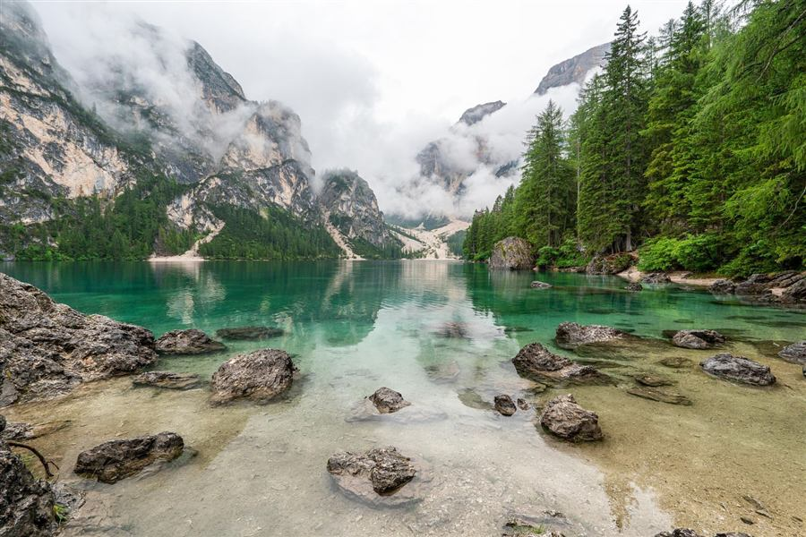

Hiker · ★★★★★
“tough”

Official figures · route line from OpenStreetMap
Above 2,500 m. Altitude sickness is possible: climb slowly and descend if you feel unwell (CDC Yellow Book).
Still Easy, leaning moderate. The fit check uses the community grade.
Pick a day. Open-Meteo forecast for the trailhead (1,731 m) and the summit (3,115 m).
Start from Wekas basecamp in the dark to reach the ridge before the rain the forecast shows on most days.
0–4 kmClimb to the summit area at 3,115 m. Rest often; this is above the 2,500 m altitude-sickness line.
4–5 kmDescend the same way. Take care at the river crossing a hiker reported, especially after rain.
5–10 kmExample of a generated plan. AI-generated text can be wrong; check conditions before you go.
“tough”
Steady climb from Wekas. The last hour to the top is steep and loose; poles helped a lot on the way down.
Turned back below the summit after heavy rain made the path slippery. Would try again in the dry season.
Sunrise from the top was worth the 2 am start. Bring a proper warm layer; it was cold and windy at the summit.